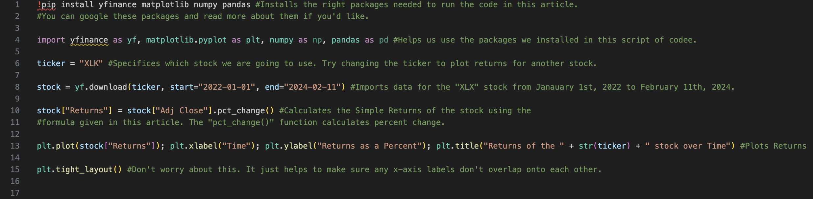
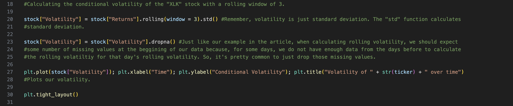

Understanding Volatility
Rishabh Singh and Anish Reddy
Disclaimer: The contents of this article is not financial advice but rather is intended for only instructional purposes.
One of the most important aspects in investing is risk. Imagine investing $100 of your hard earned money into some stock of your choice. Ideally, you’d want to know how risky that investment is.
While risk can mean many different things to many different people, (in general) it tends to be related to the returns of a stock. If a stock’s returns has varied very little in the past, then it is safe to say that its returns in the future has a good chance of being similar to what its returns have been in the past. Now, on the other hand, if a stock’s returns has varied wildly in the past, then it becomes much harder to predict what its returns may be in the future; they may vary as wildly in the future. The latter is what we generally may refer to as the "riskier" investment to make, because of how much uncertainty is behind what your returns may be when you invest in such a stock. In other words, the more volatile a stock is (or the more its returns fluctuate), the riskier it is (generally).
In finance, volatility is a measure of the variation in the returns of financial assets or, in simpler terms, approximately how much a stock's returns differ day by day (or from each other). To really see how it’s calculated, let's first understand where the numbers are coming from.
Returns
Let’s look at the imaginary closing stock prices of an imaginary company, Company X, for multiple days at a time, as is shown below:

When looking at the returns of a stock, we tend to care less about the actual dollar changes in the stock's prices between any two days. Rather, we care more about the percent change in the stock's prices, as percent change more clearly tells us how much the price of a stock increased or decreased by relative to what its price was before. When calculating returns, you can either find the simple return, given by

or the logarithmic return, given by

Now, while both return values can be used to find volatility, log-returns are more common as they are more practical and easier to deal with. However, for this example, we will stick with simple-returns.

Above, we can see the simple-returns over each day (as compared to the previous day). Notice how Day 1 has no return value, as there is no previous day for it to be compared to; when working with real stock market data, this value would usually get dropped.
From Python, here are the same calculations that we did for the stock of Company X, but now for an actual stock: the "XLK" (or the U.S. Technology Select Sector SPDR Fund); the phrase "XLK" is what we call the ticker for its stock. It's like a nickname for this specific stock, so that financial analysts would not have to refer it by its full name every time. We encourage you to click on and play around with the code here. Maybe try graphing the returns for a stock other than the "XLK", using the code we have provided here as a template. To run your code, you can copy and paste your code into your own Python-running software.
The Final Step: Volatility from Returns
Let's revisit what we had calculated to be the simple returns for the stock of Company X:

The volatility of the stock for Company X over this 8-day period would be equal to the standard deviation of our return values, which gives us

While we found the volatility of the stock over 8 days, to forecast future volatility, what we really want to know is how the volatility of our stock is changing over time. To do this, we can find the volatility for groups of days, and the size of that grouping is called our rolling window. Rolling windows can be of any size. For this example, we chose a rolling window of size 3 (or groups of 3 days). Here is where the math took us:


So the volatility for Day 4 = Standard Deviation of [.0667, 1.00, .50] = 0.467, the volatility for Day 5 = Standard Deviation of [-0.0313, .0667, 1.00] = 0.569, and so on. Since we used groups of 3, Days 2 and 3 don’t have a value associated with volatility, as it requires the day before it and the 2 days before it to have a return value. This way, we have what we call conditional volatility, or a change in volatility over time.
Now that we understand what exactly conditional volatility is, you can see it fully in action here:
There's really a number of ways you can calculate rolling volatility in Python. If you want to see how else you can do it, then check out this page on Stack Overflow; it has an example of how to calculate volatility using log returns (but that tends to be a bit more complicated).
Related Academia (i.e. Publications) to this article:
Many of these papers will be hard to understand, but they are the real deal. To understand them better, try asking tools like AI to explain what's written in these papers but in simpler terms.
1. Forecasting volatility in Asian financial markets: evidence from recursive and rolling window methods
2. Rolling Analysis of Time Series
3. Causal relationship between bitcoin price volatility and trading volume: Rolling window approach